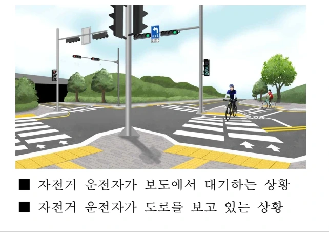

863. Дараах газарт унадаг дугуй унаж буй хүн аюулгүйгээр зам хөндлөн гарах арга 2 нь аль вэ?

- ①Унадаг дугуйтайгаа явган хүний гарцын ногоон гэрлийг хүлээгээд унадаг дугуйгаа унан гарна.
- ②Өөр унадаг дугуй унаж буй хүн гарч байгаа тул хурдан гарна.
- ③Бусад унадаг дугуйтай мөргөлдөх эрсдэлтэй тул унадаг дугуйнаасаа бууж, явган хүний замын аюулгүй хэсэгт хүлээнэ.
- ④Унадаг дугуй унаж буй хүн хүүхэд эсвэл ахмад настан бол явган зорчигчийн гэрлэн дохио ногоон байх үед унаж гарна.
- ⑤Явган хүний гарцын гэрлэн дохио ногоон байх үед унадаг дугуйгаа түрж гарна.
Хариулт харах
Зөв хариулт
③ Бусад унадаг дугуйтай мөргөлдөх эрсдэлтэй тул унадаг дугуйнаасаа бууж, явган хүний замын аюулгүй хэсэгт хүлээнэ.
⑤ Явган хүний гарцын гэрлэн дохио ногоон байх үед унадаг дугуйгаа түрж гарна.
Үндэслэл
13-2 дугаар зүйл (Унадаг дугуйгаар зорчих арга замын тусгай заалт гэх мэт) 6 дугаар зүйл.Унадаг дугуйчин явган хүний гарц ашиглан зам хөндлөн гарахдаа унадаг дугуйнаасаа бууж, унадаг дугуйг чирж, бариад алхах ёстой.
Үндэслэлийн текст нь машин орчуулга.